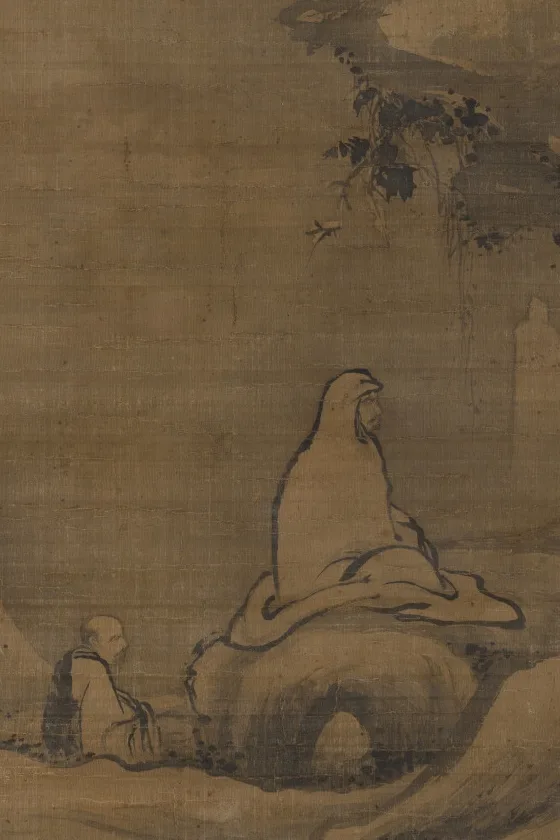

The short version
Sit still and try to think about nothing. Within about ten seconds you are planning lunch, or replaying something you said in 2014.
That wandering is not you failing at meditation. Noticing that you wandered, and coming back, is the exercise. Every kind of meditation in this guide is some version of the same small move: pick one thing to rest your attention on, lose it, and return, over and over. The returning is the rep.
Here is the part nobody selling you a subscription opens with. The benefits are real, and they are small. The most careful review of the research, 47 trials and 3,515 people, found that meditation helps anxiety, depression, and pain about as much as a drug does, and no better than exercise or therapy. Goyal 2014 good Most of the bigger claims do not hold up. And for a minority of people, sitting with their own mind does real harm.
So this guide does two things at once. It maps every major kind of meditation, what it is, where it came from, and how to actually do the core of it, so you can pick one and start today. And it gives you the honest version of what it will and will not do for you, with every number sourced and the inconvenient ones left in.
Every practice in this guide sorts by one question: what do you do with your attention? Underneath all of them is the same move.
The traditions argue fiercely about why you do this and what it leads to. They barely argue about the move itself.
What the evidence actually shows
Meditation works, a little. That is the honest headline, and it is less thrilling than the posters in the studio.
The most careful look at the field is still a 2014 review in JAMA Internal Medicine: 47 randomized trials, 3,515 people, the kind that compares meditation against a real control group instead of a waitlist. It found moderate-quality evidence that mindfulness programs help three things, anxiety, depression, and pain, with small effects, around 0.3 on the standard scale. For calibration, 0.3 is roughly how much an antidepressant beats a sugar pill. Those are the eight-week numbers, taken right after the course; they fade by roughly a third within a few months. Goyal 2014 good
Then the sentence that belongs on the box. The same review found no evidence that meditation beat any active treatment, drugs, exercise, or other therapy. Against doing nothing, meditation helps. Against going for a run or seeing a counselor, no one has shown it does better.
Effect sizes from the strongest reviews, measured right after an eight-week course. The bars are the benefit versus doing nothing. The dashed line is where the benefit lands once you compare it against a real alternative.
An umbrella review of 44 meta-analyses, 336 trials and 30,000 people found the benefit shrinks against an active control, smaller and far less often significant than against a waitlist, even as it held its own against proven therapies like CBT. Goyal 2014; Goldberg 2022.
That pattern is the whole story of meditation research. The one place it keeps a clear edge over standard care is worth knowing: a course called MBCT (mindfulness-based cognitive therapy) cuts the relapse rate for recurring depression by about a third, better than usual care, though no better than simply staying on antidepressants. Kuyken 2016 good Everywhere else, it is a decent option, not a special one.
The hype is a billion-dollar business
The gap between "small, real benefit" and the marketing is the size of an industry. Meditation apps are about a $1.5 billion a year market, and Calm alone pulls in a few hundred million dollars a year. Statista estimate In 2018 a group of researchers, several of them meditation believers, published a paper titled "Mind the Hype," warning that "misinformation and poor methodology" could leave people "harmed, misled, and disappointed." Their most damning figure: only about 9 percent of mindfulness trials had ever been tested against an active control, a real alternative rather than a waitlist. Van Dam 2018 strong
It can hurt some people
This is the part the apps never mention. For decades almost no one studied it. When researchers finally asked carefully, the numbers were not small. In a controlled trial of mindfulness courses, 83 percent of people reported some effect from the practice, 58 percent an unpleasant one, and between 6 and 14 percent a problem that lasted more than a month. Britton 2021 good That same study was careful to add that this is about the rate of trouble you would get from other kinds of therapy. A separate survey of regular meditators found about a quarter had at some point had an experience they found frightening or distressing. Schlosser 2019 mixed
The harms are specific: anxiety, a sense of unreality or detachment from yourself and the world, old trauma reopening, and, rarely, in vulnerable people, mania or psychosis. Lindahl 2017 They turn up more on long silent retreats and in the deep "insight" practices, and they can hit people with no history of mental illness. None of this means do not meditate. It means meditation is a real intervention with real effects, the good and the bad, and not a harmless garnish. Treat it like one.
TM, where a small truth sells a tall tale
Transcendental Meditation is the cautionary tale of the entire field. It has one genuine, modest result: it lowers blood pressure by a few points, the only meditation method the American Heart Association endorses at all, though it rates plain aerobic exercise far higher. AHA 2013 mixed The movement uses that one real finding to sell a roughly $980 course and a set of claims that are not science.
Advanced practitioners can levitate ("Yogic Flying"). And if enough people meditate together, a "field of consciousness" lowers crime: one study claimed a gathering of meditators cut violent crime in Washington, DC by 23 percent in the summer of 1993.
The "flying" on video is people hopping while sitting cross-legged. The crime study was run by the movement's own members and never independently replicated, and the 23 percent was not a count of murders but a modeled drop in a bundle of homicides, rapes, and assaults, claimed over the summer of the year DC set its all-time murder record. Keep the blood pressure. Skip the cosmos.
Every major kind, in one place
There is no one meditation, the way there is one Tao Te Ching. There are dozens of techniques from a dozen traditions, and they disagree about nearly everything except the basic move.
Here are eleven of the most practiced, side by side. Tap any one for what it is, where it came from, what it claims, what the evidence says, and exactly how to do the core of it. Or switch to the table to compare them at a glance. They are sorted roughly easiest-to-start first, so the top of the list is a fine place to begin.
How to actually begin
You can start in the next ten minutes, for free, with no app, no special cushion, and no beliefs. Strip every technique above down to its frame and the same handful of instructions are left.
- Sit down.
A chair is fine. Upright but not rigid, hands resting in your lap, feet flat. You do not need a lotus position, you need a back that holds itself up so you stay awake.
- Set a timer.
Five or ten minutes to start. Short and daily beats long and occasional, every time. Knowing the timer will end it frees you to stop watching the clock.
- Lower your eyes.
Closed, or open with a soft, unfocused gaze on the floor a few feet ahead. Closed is calmer; open keeps you from drifting into a nap.
- Pick one anchor.
The breath is the standard choice, because you always have it with you. Rest your attention where you feel it most plainly, the nose, the chest, or the belly. Do not control it, just feel the breath that is already happening.
- When you wander, come back.
You will wander, constantly, within seconds. The moment you notice, return your attention to the breath, kindly and without a lecture. That noticing-and-returning is not the interruption of the practice. It is the practice.
- Stop when the timer ends.
Sit for a few seconds, then get up slowly. You are done. Do it again tomorrow.
That is a real meditation, the same one in the hospital courses. Pick a different anchor and you have most of the others: a mantra instead of the breath, a body part, a phrase of goodwill, a sacred word. The frame does not change.
- Expect to wander the whole time. A mind that drifts a hundred times is not failing. You just get a hundred reps of coming back, which is the only thing being trained.
- Keep it short and daily. Ten minutes you actually do beats an hour you dread and skip.
- An app, to get going. Fine as training wheels, as long as you know you are paying a subscription for a free thing you will eventually do on your own.
- Trying to clear your mind. Not the goal, not possible, and the effort backfires into frustration. You are not emptying the mind, you are noticing where it went.
- Grading yourself. "I'm bad at this" is just another thought to notice and let go. The kind, bored, matter-of-fact return is the whole skill.
If sitting still feels like too much, start with the breath
Shaping the breath is the gentlest way in, and the one move in this guide with the crispest physiology behind it. Slowing down, and making the exhale longer than the inhale, trips the vagus nerve and slows your heart toward calm. In a 2023 Stanford trial, five minutes a day of slow breathing with long exhales lifted people's mood more than the same five minutes spent meditating. Balban 2023 good Pick a pattern and follow the circle.
A breathing pacer
interactiveReady
Press start, and follow the circle
Your first two weeks
If you just want to be told what to do: ten minutes of mindfulness of breath, every morning, for two weeks. It is free, it is the best-studied, and it trains the one move every other technique runs on.
Do that and you will have a fair test of whether meditation does anything for you, which is more than most people who have an opinion about it can say. If you want to aim at something more specific, here is where to point.
| If you are after | Start with |
|---|---|
| The best-evidence default | Mindfulness of breath, the ten-minute start above |
| Calm, right now, in a hard moment | Breathwork: the physiological sigh, one to five minutes |
| A quieter inner critic, or less resentment | Loving-kindness |
| To practice inside your own faith | Centering prayer or the Jesus Prayer; dhikr; tonglen |
| Depth, and you do not mind intensity | A vipassana retreat or a Zen group, eyes open about the risks |
Whatever you pick, the trap at the end is the same one this site keeps running into. You do not need an hour, you need the ten minutes you will actually do. You do not need the deepest practice, you need a steady one. The people who get the most out of meditation are not the ones doing the most of it. They are the ones who kept showing up for the small dose. The benefit is real, it is modest, and it lives almost entirely in the habit, not the heroics.
Noticing that you wandered, and coming back, is the whole practice. Everything else is which thing you came back to, and why.Meditation, Mapped
Sources, and how to read them
Every number here ties to a real study, cited where it appears. The research was told to refute the case for meditation, not to sell it, so the corrections are in the body, not buried: the benefits are small, they shrink against real alternatives, the harms are real, and TM's grand claims are nonsense. The primary instructions come from each tradition's own teachers and texts.
The full list, 38 sources, grouped by topic
- The evidence: what works
- Goyal M, et al. (2014). Meditation programs for psychological stress and well-being: a systematic review and meta-analysis. JAMA Internal Medicine. PMC
- Goldberg SB, et al. (2022). The empirical status of mindfulness-based interventions: 44 meta-analyses of RCTs. Perspectives on Psychological Science. PMC
- Kuyken W, et al. (2016). Efficacy of mindfulness-based cognitive therapy in prevention of depressive relapse: an individual patient data meta-analysis. JAMA Psychiatry. jamanetwork.com
- Hilton L, et al. (2017). Mindfulness meditation for chronic pain: systematic review and meta-analysis. Annals of Behavioral Medicine. PubMed
- Black DS, et al. (2015). Mindfulness meditation and improvement in sleep quality in older adults. JAMA Internal Medicine. jamanetwork.com
- Grant S, et al. (2017). Mindfulness-based relapse prevention for substance use disorders: meta-analysis. Journal of Addiction Medicine. PubMed
- The hype
- Van Dam NT, et al. (2018). Mind the hype: a critical evaluation and prescriptive agenda for research on mindfulness and meditation. Perspectives on Psychological Science. PubMed
- Statista (2024). Top health and meditation apps by revenue (market and Calm figures; commercial estimate). statista.com
- The harms
- Lindahl JR, Fisher NE, Cooper DJ, Rosen RK, Britton WB (2017). The varieties of contemplative experience. PLOS ONE. journals.plos.org
- Schlosser M, et al. (2019). Unpleasant meditation-related experiences in regular meditators. PLOS ONE. journals.plos.org
- Britton WB, et al. (2021). Defining and measuring meditation-related adverse effects in mindfulness-based programs. Clinical Psychological Science. PMC
- Farias M, et al. (2020). Adverse events in meditation practices and meditation-based therapies: a systematic review. Acta Psychiatrica Scandinavica. PubMed
- Transcendental Meditation
- Brook RD, et al. / American Heart Association (2013). Beyond medications and diet: alternative approaches to lowering blood pressure. Hypertension. ahajournals.org
- Hagelin JS, et al. (1999). Effects of group practice of TM on preventing violent crime in Washington, D.C. Social Indicators Research (the "Maharishi Effect" study). Springer
- Yogic flying. Overview and the levitation claim. Wikipedia
- Transcendental Meditation program. Official US course fee. tm.org
- How to do them: instructions and origins
- Kabat-Zinn J. Mindfulness-Based Stress Reduction (MBSR), UMass Center for Mindfulness. ummhealth.org
- Kabat-Zinn J. (1994). Wherever You Go, There You Are (the definition of mindfulness). mindful.org
- Teasdale JD, Segal ZV, Williams JMG, et al. (2000). Prevention of relapse in major depression by mindfulness-based cognitive therapy. J Consult Clin Psychol. PubMed
- The body scan. Greater Good in Action, UC Berkeley (MBSR-sourced). ggia.berkeley.edu
- Karaniya Metta Sutta (Sn 1.8), the Buddha's words on loving-kindness, trans. Amaravati Sangha. accesstoinsight.org
- Salzberg S. A guided loving-kindness meditation (the phrases and the widening circle). mindful.org
- Balban MY, et al. (2023). Brief structured respiration practices ("cyclic sighing") enhance mood and reduce physiological arousal. Cell Reports Medicine (Stanford). PMC
- Pranayama. Patanjali's Yoga Sutras (the fourth limb) and the Hatha tradition. Wikipedia
- Shallow-water blackout. Why forceful breathing and breath-holds are dangerous near water. wimhofmethod.com
- Transcendental Meditation: technique and cost. Cleveland Clinic. clevelandclinic.org
- Satipatthana Sutta (MN 10), the four foundations of mindfulness, trans. Nyanasatta Thera. accesstoinsight.org
- S.N. Goenka, the 10-day Vipassana course. Vipassana Research Institute. vridhamma.org
- Dogen. Fukanzazengi (Universally Recommended Instructions for Zazen). thedewdrop.org
- Shikantaza ("just sitting"), Soto Zen, and koan introspection. Wikipedia
- Centering Prayer: the method (Thomas Keating's four guidelines). Contemplative Outreach. contemplativeoutreach.org
- Centering Prayer and The Cloud of Unknowing (history and roots). Wikipedia
- The Jesus Prayer. Orthodox Church in America. oca.org
- Hesychasm and the Philokalia. OrthodoxWiki. orthodoxwiki.org
- Dhikr (remembrance of God), Quranic basis and the Sufi orders. Wikipedia
- Dhikr: practice instruction (formulas, beads, breath). Shadhiliyya Sufi communities. suficommunities.org
- Pema Chodron. How to practice tonglen (the four stages). Lion's Roar. lionsroar.com
- Tonglen and lojong (Atisha's mind training). Rigpa Wiki. rigpawiki.org
The card and link image is a Chola-period granite Buddha Shakyamuni seated in dhyana mudra, the meditation gesture (Tamil Nadu, about the 12th century, Art Institute of Chicago, CC0). The opening painting is Bodhidharma Meditating Facing a Cliff (China, Southern Song dynasty, Cleveland Museum of Art, CC0).